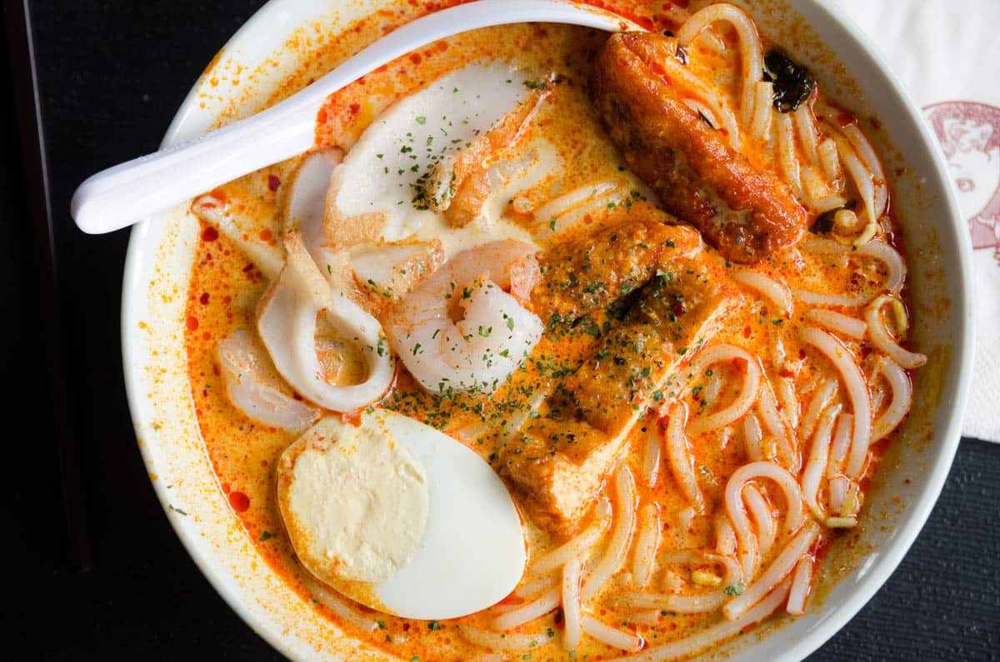

Home
Katong Laksa

Image courtesy of
Singapore
Travel Insider.
Description
Katong laksa is a variation of the famous South East Asian dish laksa lemak. It
is inspired by the Peranakans who live in the Katong area of Singapore. It has an
orangey-yellow-coloured spicy soup stock made with coconut milk and dried shrimp,
often topped with ingredients such as cockles, prawns and fish cake.
It is a special kind of laksa that is defined by the fact that it is eaten
without chopsticks or a fork, only a spoon, as the noodles are cut up into smaller,
bite-sized pieces.
Ingredients
Ingredients and Steps loosely based on
Nomadette.com.
- Spice paste (Rempah)
- Prawn stock
- Coconut milk
- Rice noodles
- Laksa leaf
- Fried tau pok (fried tofu puffs)
- Sambal chilli
- Dried shrimp
- Prawns
- Fish cake
- Bean sprouts
Steps
- Blend the Aromatics to make the Rempah
- Combine fresh red chilies, rehydrated dried chilies, shallots, garlic,
lemongrass, galangal, fresh turmeric, candlenuts, dried shrimp, and
toasted belacan (shrimp paste) in a food processor.
- Fry the paste by heating oil in a wok and stir-frying over low heat
for 15-30 minutes until the mixture is split and becomes fragrant with a
slightly sandy texture.
- Prepare the Shrimp Stock
- Fry prawn heads and shells in a dash of oil until they become toasty,
fragrant and red.
- Add water to the prawn heads and shells, bring to a boil, and simmer
on lowfor 30-45 minutes. Strain the shells out and keep the rich
stock.
- Cook the Laksa Gravy
- Add your remaining laksa paste to the pot along with the shrimp stock
and coconut milk.
- Add tau pok (tofu puffs) and chopped laksa leaves. Let the broth
simmer gently until the flavors meld into a rich, velvety gravy.
- Blanch and Assemble
- Briefly blanch thick bee hoon (rice vermicelli), bean sprouts, and
seafood (prawns, fish cake slices, and cockles) in hot water.
- Cut the noodles into short lengths, place them in a bowl, and add
the bean sprouts, seafood, and a dollop of spicy sambal. Ladle the
boiling hot gravy over the ingredients and garnish with extra laksa
leaves.